01 · Manicure Without Polish
Basic Manicure — $10
Spa Manicure — $15
Natural nails, neatly cared for. Both options finish without polish.
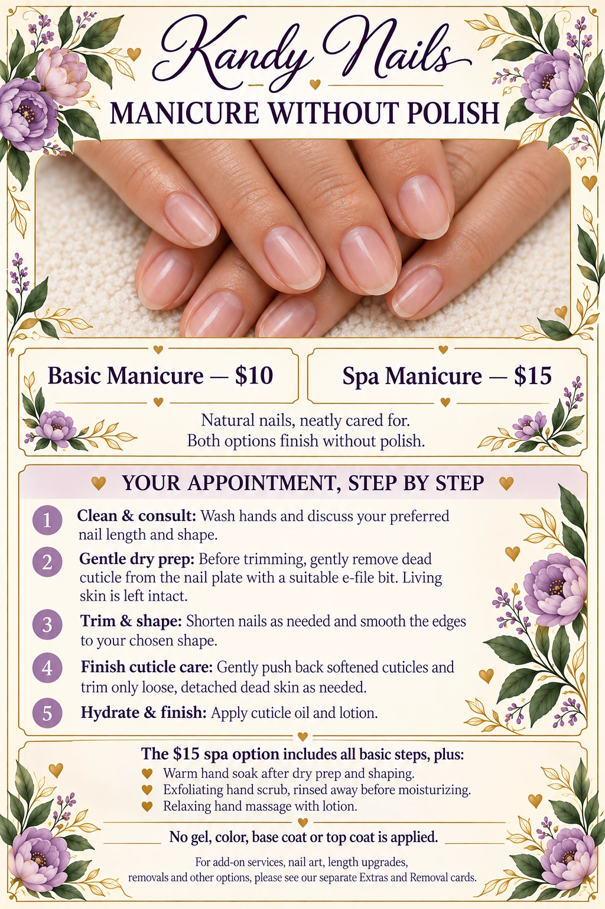
Service illustration · Save this card
Read the appointment steps
- Clean & consult: Wash hands and discuss your preferred nail length and shape.
- Gentle dry prep: Before trimming, gently remove dead cuticle from the nail plate with a suitable e-file bit. Living skin is left intact.
- Trim & shape: Shorten nails as needed and smooth the edges to your chosen shape.
- Finish cuticle care: Gently push back softened cuticles and trim only loose, detached dead skin as needed.
- Hydrate & finish: Apply cuticle oil and lotion.
The $15 spa option includes all basic steps, plus:
Warm hand soak after dry prep and shaping.
Exfoliating hand scrub, rinsed away before moisturizing.
Relaxing hand massage with lotion.
No gel, color, base coat or top coat is applied.
02 · Gel Manicure
$15
Gel color on your natural nails. Includes nail and cuticle prep, shaping, gel color and top coat. No extensions or builder-gel layer.
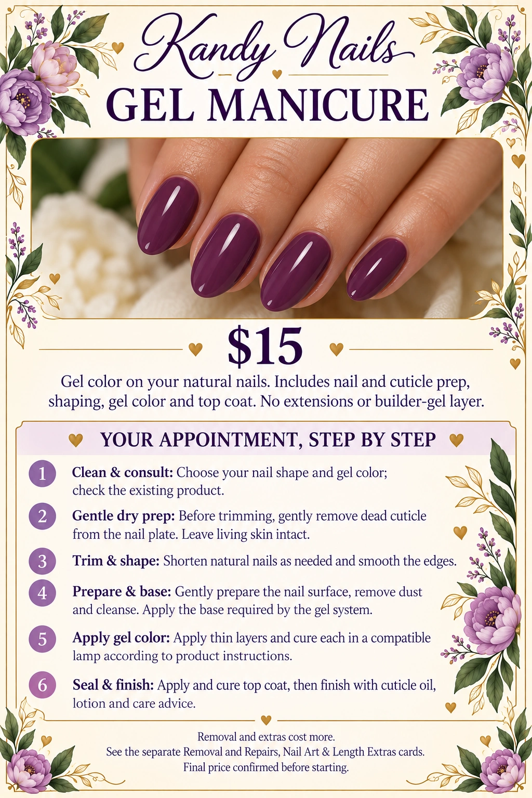
Service illustration · Save this card
Read the appointment steps
- Clean & consult: Choose your nail shape and gel color; check the existing product.
- Gentle dry prep: Before trimming, gently remove dead cuticle from the nail plate. Leave living skin intact.
- Trim & shape: Shorten natural nails as needed and smooth the edges.
- Prepare & base: Gently prepare the nail surface, remove dust and cleanse. Apply the base required by the gel system.
- Apply gel color: Apply thin layers and cure each in a compatible lamp according to product instructions.
- Seal & finish: Apply and cure top coat, then finish with cuticle oil, lotion and care advice.
Removal and extras cost more. See the separate Removal and Repairs, Nail Art & Length Extras cards. Final price confirmed before starting.
03 · Natural Nail Gel Overlay
$25
Added strength over your natural nails, without adding length. Includes builder/hard gel, gel color and top coat.
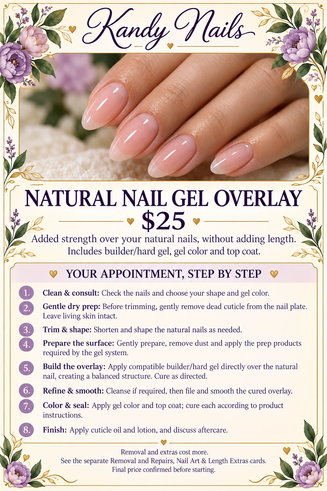
Service illustration · Save this card
Read the appointment steps
- Clean & consult: Check the nails and choose your shape and gel color.
- Gentle dry prep: Before trimming, gently remove dead cuticle from the nail plate. Leave living skin intact.
- Trim & shape: Shorten and shape the natural nails as needed.
- Prepare the surface: Gently prepare, remove dust and apply the prep products required by the gel system.
- Build the overlay: Apply compatible builder/hard gel directly over the natural nail, creating a balanced structure. Cure as directed.
- Refine & smooth: Cleanse if required, then file and smooth the cured overlay.
- Color & seal: Apply gel color and top coat; cure each according to product instructions.
- Finish: Apply cuticle oil and lotion, and discuss aftercare.
Removal and extras cost more. See the separate Removal and Repairs, Nail Art & Length Extras cards. Final price confirmed before starting.
04 · Natural Nail Acrylic Overlay
$25
A strengthening acrylic layer over your natural nail length. No extension tips or added length.
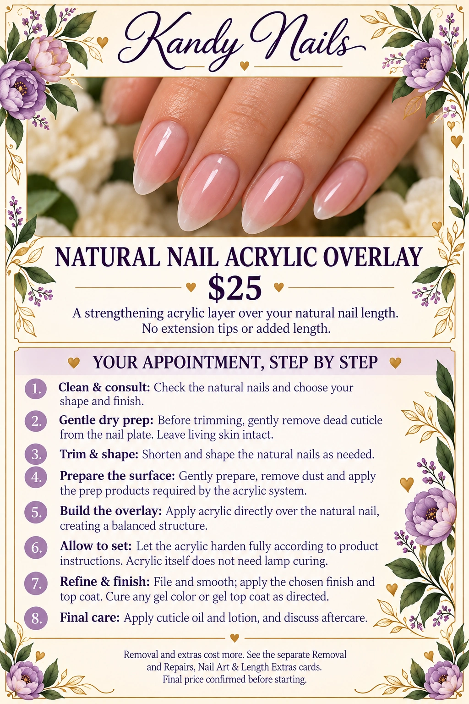
Service illustration · Save this card
Read the appointment steps
- Clean & consult: Check the natural nails and choose your shape and finish.
- Gentle dry prep: Before trimming, gently remove dead cuticle from the nail plate. Leave living skin intact.
- Trim & shape: Shorten and shape the natural nails as needed.
- Prepare the surface: Gently prepare, remove dust and apply the prep products required by the acrylic system.
- Build the overlay: Apply acrylic directly over the natural nail, creating a balanced structure.
- Allow to set: Let the acrylic harden fully according to product instructions. Acrylic itself does not need lamp curing.
- Refine & finish: File and smooth; apply the chosen finish and top coat. Cure any gel color or gel top coat as directed.
- Final care: Apply cuticle oil and lotion, and discuss aftercare.
Removal and extras cost more. See the separate Removal and Repairs, Nail Art & Length Extras cards. Final price confirmed before starting.
05 · Acrylic & Builder Gel Extensions
Acrylic Full Set — $30
Builder Gel Full Set — $35
Added length using extension tips, finished with a balanced acrylic or builder-gel structure.
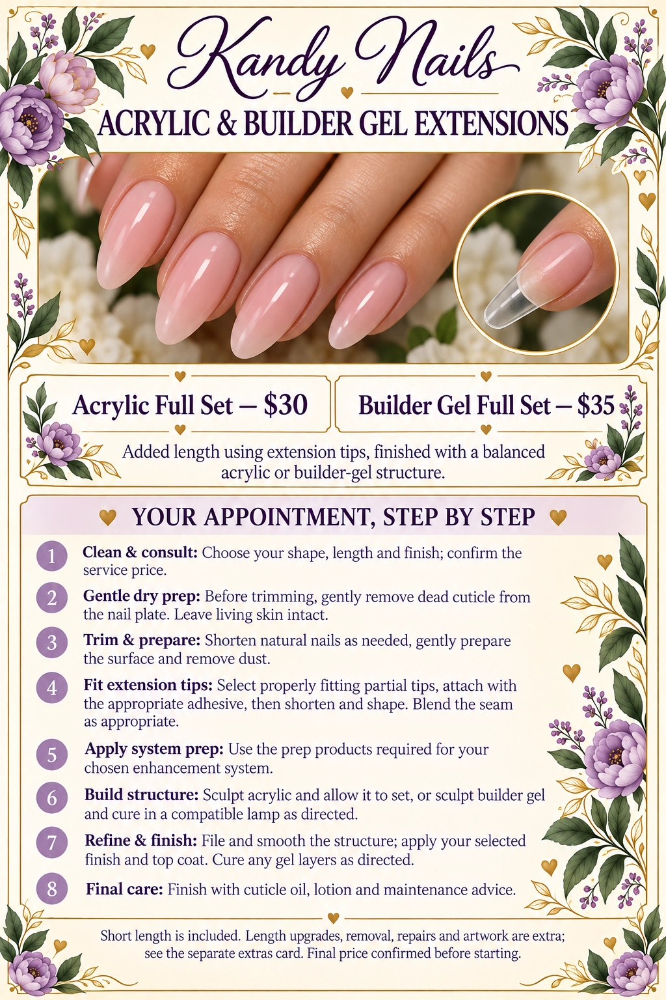
Service illustration · Save this card
Read the appointment steps
- Clean & consult: Choose your shape, length and finish; confirm the service price.
- Gentle dry prep: Before trimming, gently remove dead cuticle from the nail plate. Leave living skin intact.
- Trim & prepare: Shorten natural nails as needed, gently prepare the surface and remove dust.
- Fit extension tips: Select properly fitting partial tips, attach with the appropriate adhesive, then shorten and shape. Blend the seam as appropriate.
- Apply system prep: Use the prep products required for your chosen enhancement system.
- Build structure: Sculpt acrylic and allow it to set, or sculpt builder gel and cure in a compatible lamp as directed.
- Refine & finish: File and smooth the structure; apply your selected finish and top coat. Cure any gel layers as directed.
- Final care: Finish with cuticle oil, lotion and maintenance advice.
Short length is included. Length upgrades, removal, repairs and artwork are extra; see the separate extras card. Final price confirmed before starting.
06 · Full-Coverage Tips + Gel
$20
Added length with full-cover tips, shaped and finished with gel color and top coat.
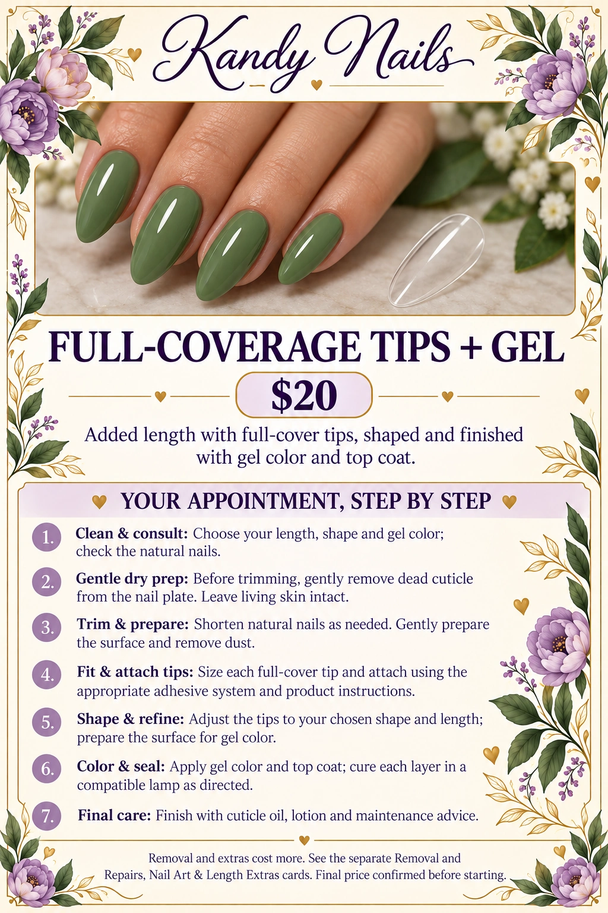
Service illustration · Save this card
Read the appointment steps
- Clean & consult: Choose your length, shape and gel color; check the natural nails.
- Gentle dry prep: Before trimming, gently remove dead cuticle from the nail plate. Leave living skin intact.
- Trim & prepare: Shorten natural nails as needed. Gently prepare the surface and remove dust.
- Fit & attach tips: Size each full-cover tip and attach using the appropriate adhesive system and product instructions.
- Shape & refine: Adjust the tips to your chosen shape and length; prepare the surface for gel color.
- Color & seal: Apply gel color and top coat; cure each layer in a compatible lamp as directed.
- Final care: Finish with cuticle oil, lotion and maintenance advice.
Removal and extras cost more. See the separate Removal and Repairs, Nail Art & Length Extras cards. Final price confirmed before starting.
07 · Fills, Rebalancing & French Backfills
Standard Fill — from $25
Extensive Rebalance — from $30
French Backfill — from $35
Builder gel and acrylic maintenance. Routine rebalancing is included in a standard fill.
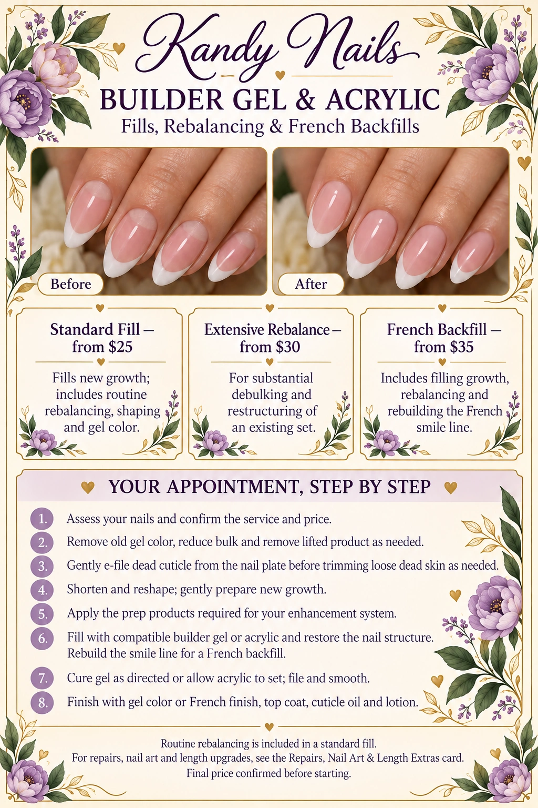
Service illustration · Save this card
Read the appointment steps
- Assess your nails and confirm the service and price.
- Remove old gel color, reduce bulk and remove lifted product as needed.
- Gently e-file dead cuticle from the nail plate before trimming loose dead skin as needed.
- Shorten and reshape; gently prepare new growth.
- Apply the prep products required for your enhancement system.
- Fill with compatible builder gel or acrylic and restore the nail structure. Rebuild the smile line for a French backfill.
- Cure gel as directed or allow acrylic to set; file and smooth.
- Finish with gel color or French finish, top coat, cuticle oil and lotion.
For repairs, nail art and length upgrades, see the Repairs, Nail Art & Length Extras card. Final price confirmed before starting.
08 · Signature Spa Pedicure
Without Polish — $25
Your health. Your comfort. Your ritual.
Detailed nail and cuticle preparation takes place while your feet are dry, followed by your spa care.
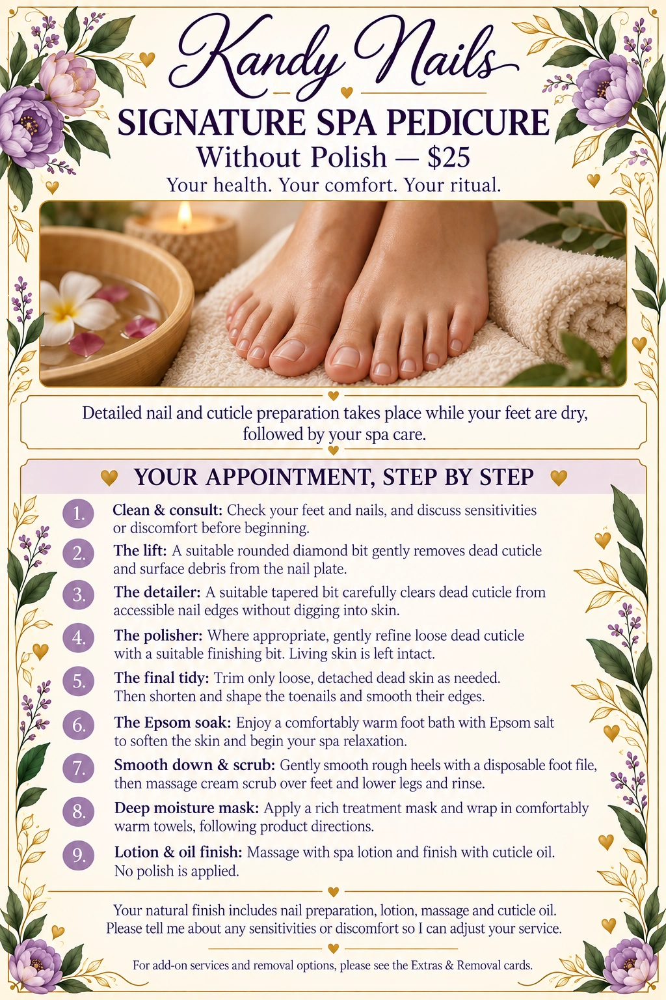
Service illustration · Save this card
Read the appointment steps
- Clean & consult: Check your feet and nails, and discuss sensitivities or discomfort before beginning.
- The lift: A suitable rounded diamond bit gently removes dead cuticle and surface debris from the nail plate.
- The detailer: A suitable tapered bit carefully clears dead cuticle from accessible nail edges without digging into skin.
- The polisher: Where appropriate, gently refine loose dead cuticle with a suitable finishing bit. Living skin is left intact.
- The final tidy: Trim only loose, detached dead skin as needed. Then shorten and shape the toenails and smooth their edges.
- The Epsom soak: Enjoy a comfortably warm foot bath with Epsom salt to soften the skin and begin your spa relaxation.
- Smooth down & scrub: Gently smooth rough heels with a disposable foot file, then massage cream scrub over feet and lower legs and rinse.
- Deep moisture mask: Apply a rich treatment mask and wrap in comfortably warm towels, following product directions.
- Lotion & oil finish: Massage with spa lotion and finish with cuticle oil. No polish is applied.
Your natural finish includes nail preparation, lotion, massage and cuticle oil. Please tell me about any sensitivities or discomfort so I can adjust your service.
09 · Spa Pedicure With Gel
$35
$25 spa pedicure + $10 gel polish
Your spa pedicure, finished with gel color and top coat.
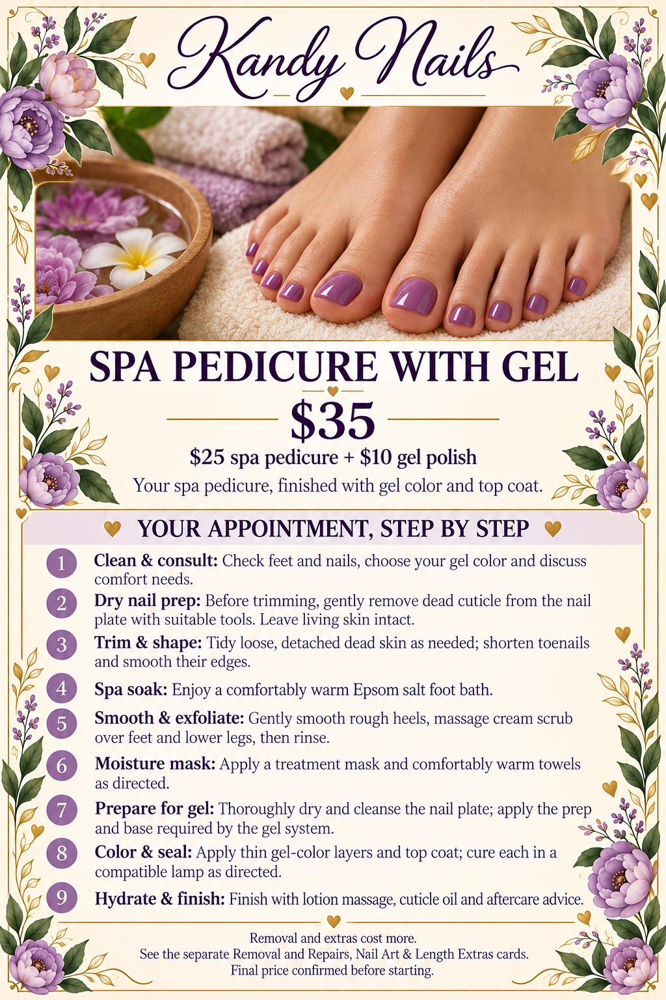
Service illustration · Save this card
Read the appointment steps
- Clean & consult: Check feet and nails, choose your gel color and discuss comfort needs.
- Dry nail prep: Before trimming, gently remove dead cuticle from the nail plate with suitable tools. Leave living skin intact.
- Trim & shape: Tidy loose, detached dead skin as needed; shorten toenails and smooth their edges.
- Spa soak: Enjoy a comfortably warm Epsom salt foot bath.
- Smooth & exfoliate: Gently smooth rough heels, massage cream scrub over feet and lower legs, then rinse.
- Moisture mask: Apply a treatment mask and comfortably warm towels as directed.
- Prepare for gel: Thoroughly dry and cleanse the nail plate; apply the prep and base required by the gel system.
- Color & seal: Apply thin gel-color layers and top coat; cure each in a compatible lamp as directed.
- Hydrate & finish: Finish with lotion massage, cuticle oil and aftercare advice.
Removal and extras cost more. See the separate Removal and Repairs, Nail Art & Length Extras cards. Final price confirmed before starting.
10 · Regular Toe Polish
$15
A polish-only service for toes. The full spa pedicure treatment is not included.
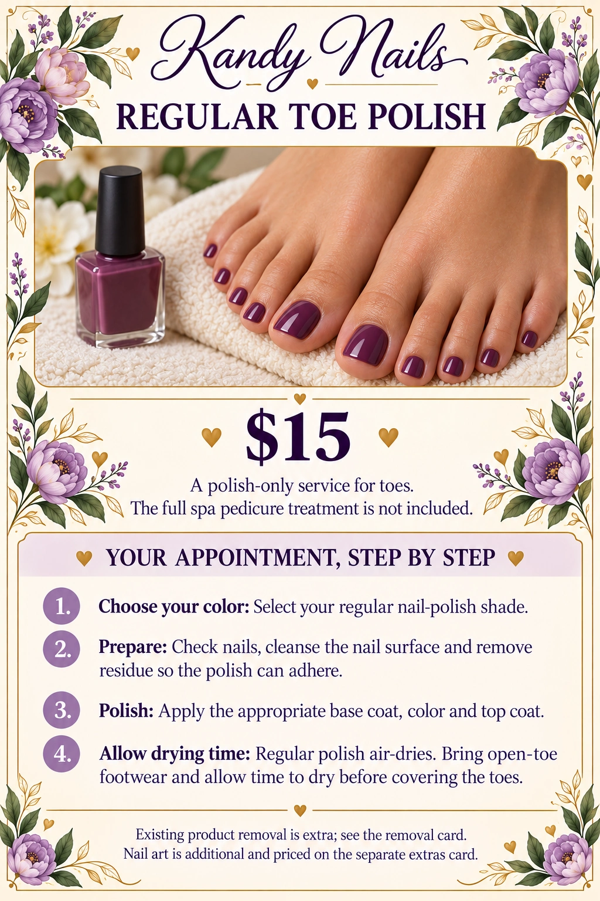
Service illustration · Save this card
Read the appointment steps
- Choose your color: Select your regular nail-polish shade.
- Prepare: Check nails, cleanse the nail surface and remove residue so the polish can adhere.
- Polish: Apply the appropriate base coat, color and top coat.
- Allow drying time: Regular polish air-dries. Bring open-toe footwear and allow time to dry before covering the toes.
Existing product removal is extra; see the removal card. Nail art is additional and priced on the separate extras card.
11 · Polish & Enhancement Removal
Polish Removal — $5
Gel / Enhancement Removal — from $10
Available without a new set. Product type and removal time affect the final cost, confirmed before starting.
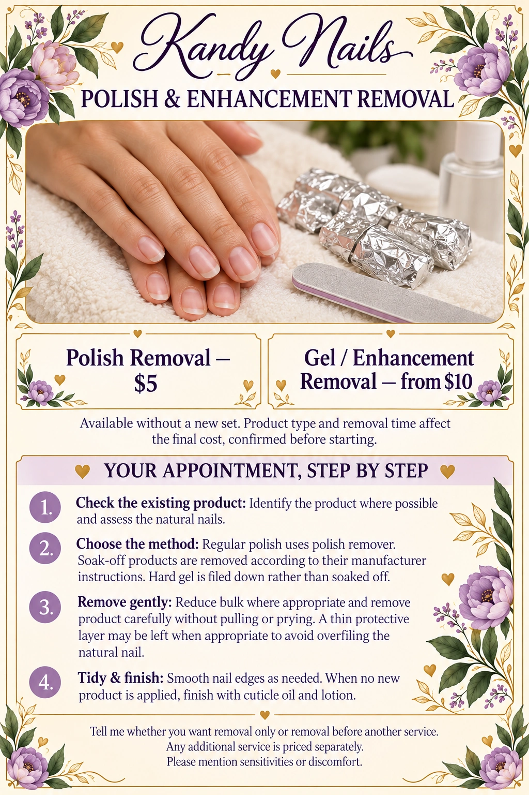
Service illustration · Save this card
Read the appointment steps
- Check the existing product: Identify the product where possible and assess the natural nails.
- Choose the method: Regular polish uses polish remover. Soak-off products are removed according to their manufacturer instructions. Hard gel is filed down rather than soaked off.
- Remove gently: Reduce bulk where appropriate and remove product carefully without pulling or prying. A thin protective layer may be left when appropriate to avoid overfiling the natural nail.
- Tidy & finish: Smooth nail edges as needed. When no new product is applied, finish with cuticle oil and lotion.
Tell me whether you want removal only or removal before another service. Any additional service is priced separately. Please mention sensitivities or discomfort.